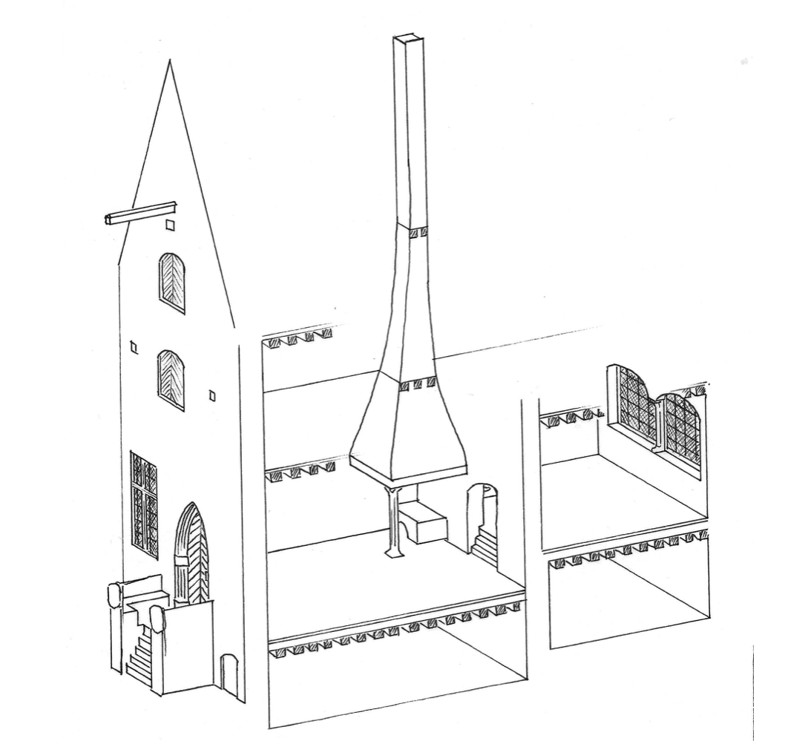
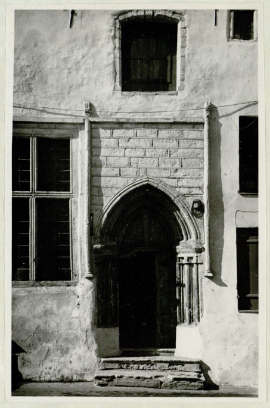
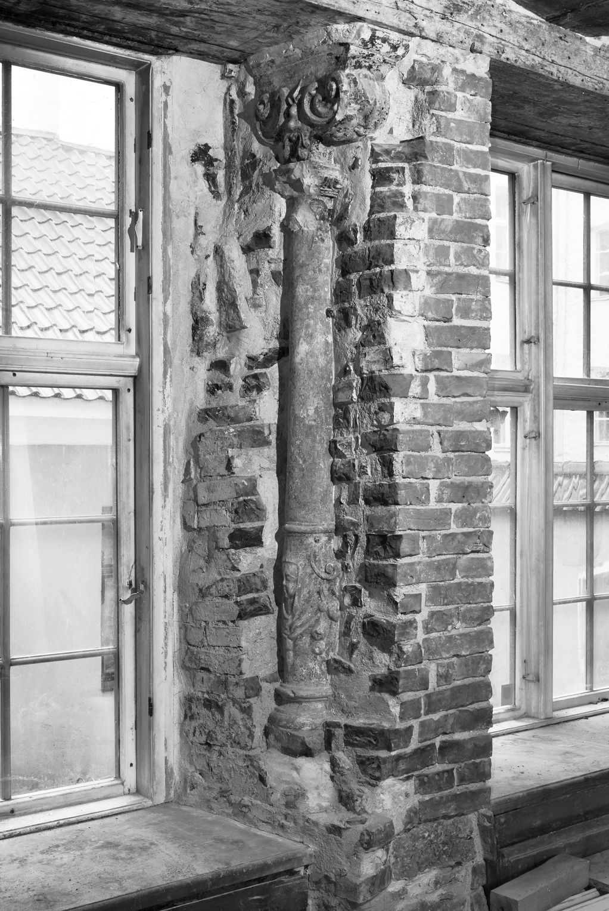
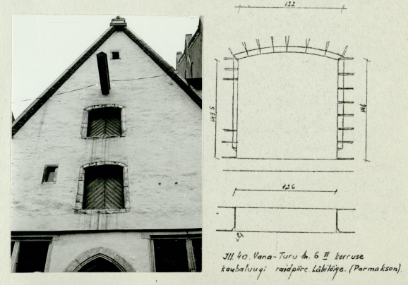
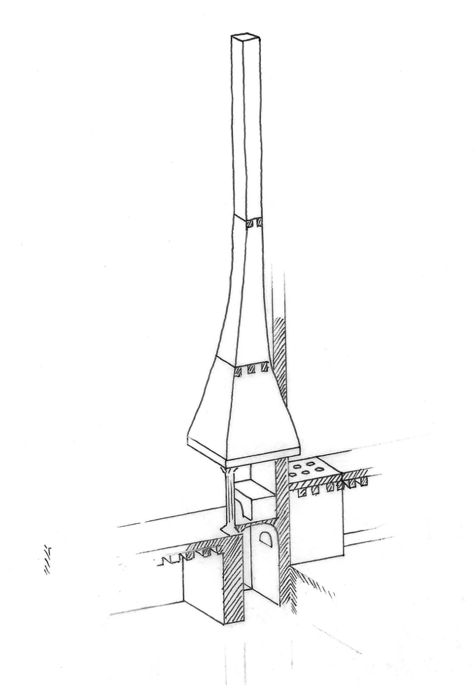
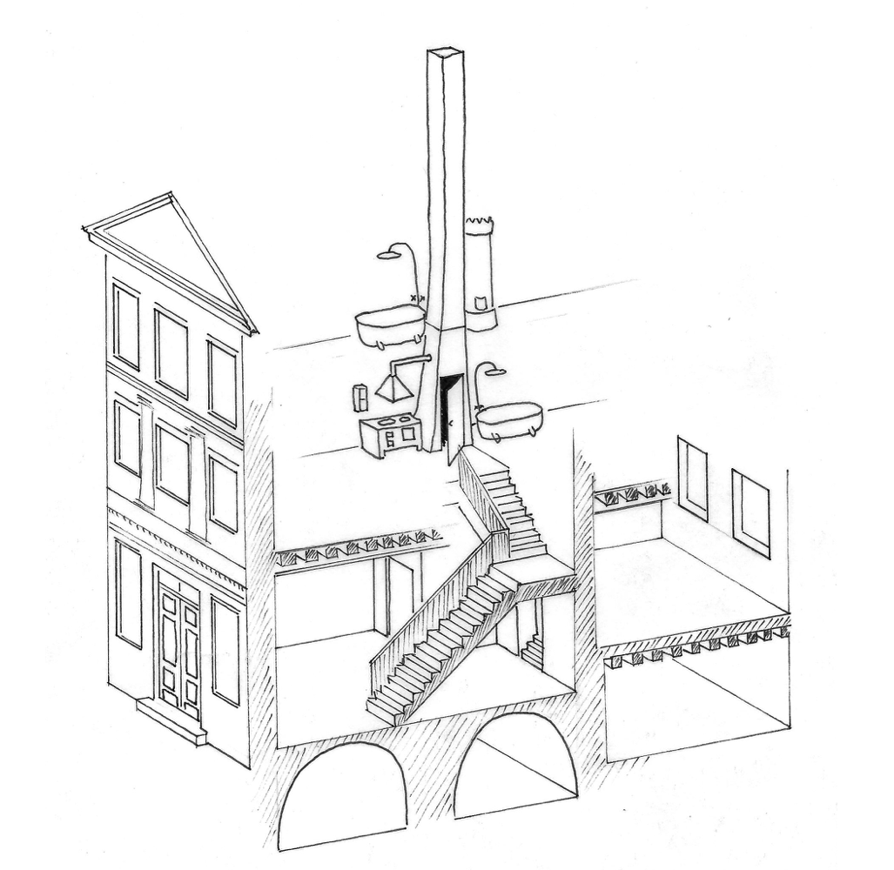
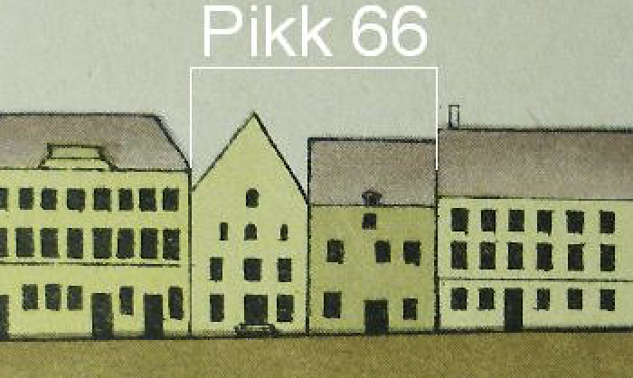
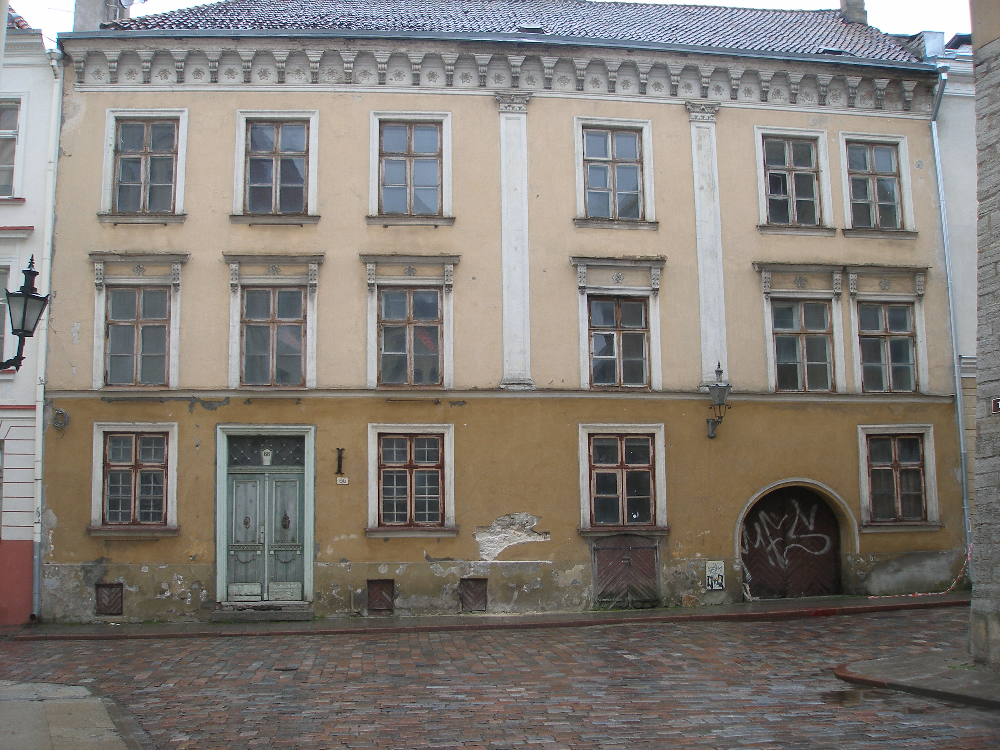

UKS
Hoone peasissepääs, mis on sageli vormistatud väga esindusliku
raidkiviteosena. Sageli on see ainuke või üks väheseid elemente,
mis Tallinna nö gooti arhitektuuris on vormistatud teravkaarsena.
Mitmetel portaalidel on töödeldud kivipinnad viimistletud
mitmevärvilisena. Portaalide dateerimisel lähtutakse kindlalt
dateeritavatest ja tuntud eeskujudest, nagu kirikud vm avalikud
hooned.
Vene tn 17 portaal:

Illustratsioon Muinsuskaitseameti arhiivistDORNSE AKEN
Privaatsema eluruumi, ehk dornse aken oli ruumi suurust arvestades samuti suhteliselt suur ning sageli väga esinduslikult vormistatud ja kujundatud. akende vahelised müüriosad olid kaunistatud sammastega, mis kandsid ajastule omaseid stiilitunnuseid - on näiteid gootikast barokini.

Aknapaled võisid samuti olla vormistatud reljeefsete või maalingutega kivipindadena. Hilisematel sajanditel on sambad ja muu dekoor kaetud uute viimistluskihtidega. Sageli on raiddetailid kinni müüritud või - suuremate ümberehituste korral - on neid samu detaile müürimatejalina kasutatud.DORNSE
Maja peakorruse ruumidest privaatsem. See oli ainuke kerishüpokaustiga köetav ruum. Osades hoonetes oli selle ruumi kaudu ainus sissepääs selle all olevasse keldriruumi.
KAUBALUUK
Katusealusele kaubakorrusele avanev luuk, mille kaudu saab vintsiga üles tõstetud asju laokorrustele ja sealt ära. Kaubaluugid on reeglina suhteliselt lihtsa ja kogu linna lõikes ka suhteliselt sarnase kujuga. Luugiavade küljed on reeglina faasitud ja siledaks tahutud paeplokkidest. Ava kaarjas sillus samamoodi viimistletud. Vana-Turg 6 fassaadi vaade kahe kaubaluugiga:

Illustratsioon Muinsuskaitseameti arhiivist Muuhulgas on sarnaseid avasid ka osade linnamüüri tornide linna poolsel küljel ning need on tegumoelt sarnased muude ehitiste omadega.ETIK
Maja peasissepääsuni viiv trepp ja platvorm, mille esikülge ehivad nn etikukivid - püstjad kiviplaadid, mille esikülg on kaunistatud omanikku iseloomustavate motiivide v peremärgi vm sümboolikaga.\nmitmed etikud on olnud nii suured, et nende sees - trepi all on olnud võlvitud ruum, mis on olnud eraldi sissepääsuga või ühendatud diele aluse keldriga.
AKEN
Maja tänavapoolsel küljel sissepääsu kõrval paiknevad aknad on sageli väga suured - paeraamistusega liigendatud kõrged aknad valgustasid kõrget diele ruumi. Aknadetaile võib sageli leida taaskasutatud materjlina müüridest ning need on äratuntavad puidust aknaraami jaoks mõeldud valtsi ning trelliaukude järgi.
MANTELKORSTEN
Maja küttesüsteemi põhiline ja suurim osa - avar mantelkorsten, mille all paikes köök. Mantelkorsten asus diele nurgas ning selle toapoolne nurk toetus reeglina paekivist sambale.

Korsten ja sellega seotud ehitusosad on nii massiivsed, et need no hoonete korruseplaanidel jälgitavad isegi siis kui korsten ise algsel kujul enam säilinud ei ole. Üsna levinud on mantelkorstna asendamine keldrist pööninguni kulgeva trepikojaga. orgaaniline ja säästlikum viis on kõikvõimalike mentilatsiooni või küttelõõride koondumine sellesse piirkonda. sageli on lõõrid ainus märk kunagi samas kohas kulgenud korstnast.VAHELAGI
Keldri ja eluruumide vaheline lagi oli tüüpiliselt mitmekihilise konstruktsiooniga. Talad toetusid seinas olevatele kivikonsoolidele ning talade peale oli kiht murtud pinnaga paeplaate. selle peal kiht kasetohtu ning selle peal sambla ja liiva kihid. Selline laekonstruktsioon tagas muuhulgas ka teatava tulekindluse.
DIELE
Maja peamine elu- ja tööruum, mille nurgas oli mantelkorstna alune köök. hilisematel sajanditel muutus see esindusruumiks, kus asus ülemistele korrustele viiv paraadse ilmega trepp.

KROHVLAGI
moodne viimistlus kattis vanema.
PARAADTREPP
Uus arusaam esinduslikkusest tõi mõisates ja linnapaleedes nähtud ruumilahendused linnakruntide kitsastesse majadesse. Baroksete piiretega laiad trepid viisid fuajee rolli saanud dielest teise korruse ruumidesse.
VÕLVLAGI
Võlvitud ruumid elamute keldrites on sageli hilisemast ehitusjärgust - varauusaegsed või umbes nii. Loomulikult on erandlikke hooneid ja lagesid. Keskaegseks võib pidada näiteks hüpokaustide kütteruumide madalaid võlve.
FASSAAD
Hoone tänvapoolne välisseinad - tegelikult üldse kõik kandvad konstruktsioonid - ehitati ümber võimalikult vähese uue materjaliga. Kuna ehitustehnoloogia oli sarnane, siis kasutati vanad kivid kohapeal ära. Illustratsiooniks vt Tallinna 1825


DORNSE ALUNE KELDER
sageli üks arhailisemaid ruume. Mitmes hoones on seda peetud kinnistu hoonestu arengu esimesest etapist pärit ehitise osaks. on arvatud, et varaseimad elamud koosnesid puidust või sõrestikust tänava äärsest osast ning kinnistu sügavuses asuvast kiviehitisest, mis oli turvalisem tuleohutuse kui sissetungijate mõttes. Keskaegsed keldriruumid sisaldavad mitmeid äratuntavaid elemente, mis on iseloomulikud jus tallinna keskaegsele arhitektuurile. Püstisest paeplaatidest uksesilluste kasutamise komme tugineb kohaliku ehitusmaterjali omadustele. Pea iga keskaegse keldriruumi seinas on nõndanimetatud küünlanišid.